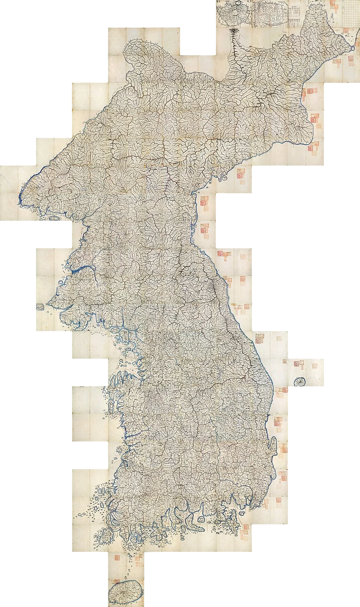
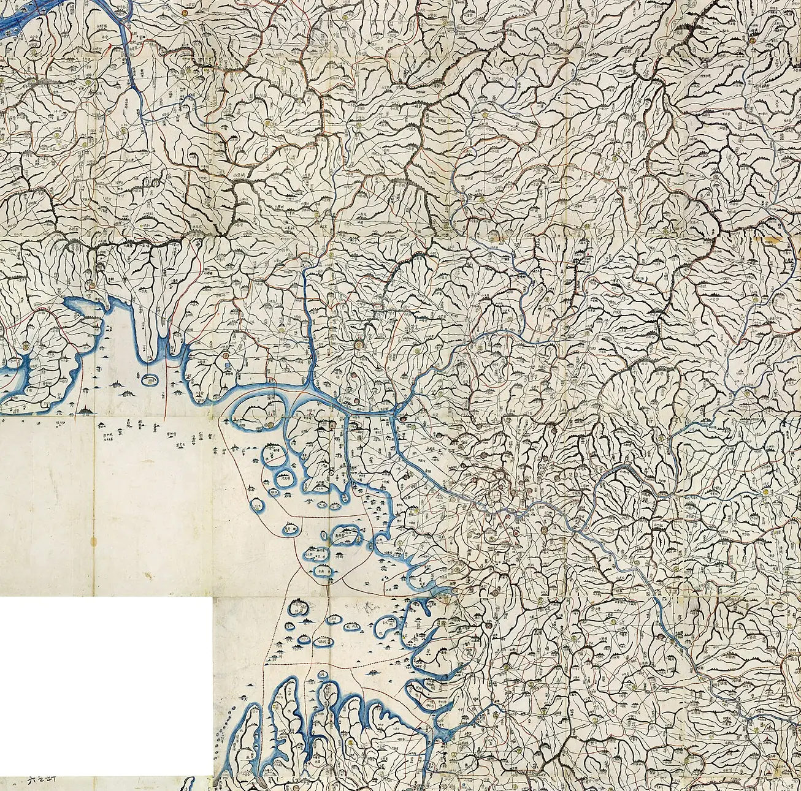

폰 크기(390×844)에서 첫 화면이 한양으로 들어간 장면을 그대로 그렸어요. 왼쪽 = 지금(960px 그림 하나) · 오른쪽 = 고화질(960px 전도 위에 3,840px 판 한양 둘레 조각).
원본: 위키미디어 공용 Daedongyeojido-full.jpg (김정호 1861, 서울대 규장각 소장, 퍼블릭 도메인 표기). 조각 파일 537KB, 첫 그림 뒤에 받아요.

